100,000 miles of railway (p. 6)
100,000 mi reached 2024; 102,500 mi at end-2025, 31,000 mi of it high-speed
Horizon / qualification: 10 yrs for 200,000 li (~62,000 mi), his 1912 pledge as Director of Railways; no horizon in the 1921 text
Snow · Research editions · 01
A plan for China.
A century in the making.
Sun Yat-sen’s development program, the country that was built, and what a comparison with America can tell us.
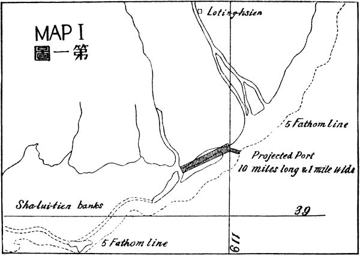
A harbor imagined · Map I, 1922
The Qinghe–Luanhe cape
Chapter 01
A railway, a harbor, a river: the pieces of a national economy imagined before they could be built.
In April 1921, Sun Yat-sen signed the preface to a book about the material future of China. Its subject was the work of joining a country together: railways across the interior, roads between settlements, harbors open to ocean trade, rivers made safer and more useful, and factories capable of supplying the construction.
The International Development of China, published in the Putnam edition in 1922, reads at once as an engineering program and a proposal to investors. Sun envisaged a large new market linked to world industry. The capacity assembled for the First World War could, in his argument, be redirected toward peaceful construction. China would gain infrastructure; foreign industry would gain work and customers.1
“100,000 miles of Railways.”
Sun Yat-sen, The International Development of China, p. 6
“1,000,000 miles of Macadam Roads.”
Those two quantities are unusually convenient for a later scorekeeper. They can be put beside observed mileage and followed through time. Other ambitions resist that treatment. Sun proposed three great ocean ports with future capacity comparable to New York Harbor. He supplied capital budgets for steel and cement works rather than annual output targets. His reforestation proposal supplied a purpose without supplying a national percentage.
This book follows the plan into the record of what was subsequently built. Its central device is a ledger: a proposal on one side, a later physical achievement on the other. The comparison separates a useful resemblance from a demonstrated chain of influence. A dam resembling an earlier proposal does not, by itself, establish that its builders followed that proposal. A country may encounter the same geography and reach a similar engineering answer.
A figure printed in the source is a textual target. A quantity reconstructed from a capital sum or a historical comparator is inferred. A number supplied by the analyst where Sun gave none is imputed. This distinction runs through the book because a modern calculation can easily make an editorial assumption look like an instruction from 1921.
The national hydroelectric target is a further complication: its thirty-million-horsepower figure comes from Sun's 1924 lectures, after the preface to the development plan. It is retained here as a supplement, with that date attached. The container targets are modern translations of a port comparison made before container shipping existed. Their presence is useful for asking a question, but their authorship belongs to the ledger.
The result is a history of a proposal meeting a century of construction—and an examination of what it means to call a proposal fulfilled. Scale, location, timing, financing and consequences each deserve their own line in the account.
Chapter 02
The railway target is clear. The road target exposes the difficulty of counting.
A railway is both a physical line and a change in the relationship between places. Sun's railway program gave the interior a route toward ports, factories and markets. The ambition was national in scale. Its most portable summary was the hundred-thousand-mile network printed near the beginning of his book.
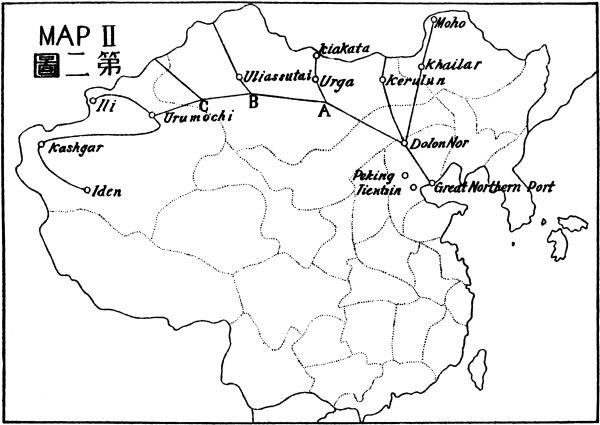
In the embedded Chinese series, operating railway mileage reaches that threshold in 2024. The 2025 anchor is 165,000 kilometers, or approximately 102,500 miles. The high-speed network forms a substantial part of the latest total, although it is not a separate measure in the composite. These are the ledger's inherited anchors, whose individual release references still require a complete audit.
miles, national network · log scale
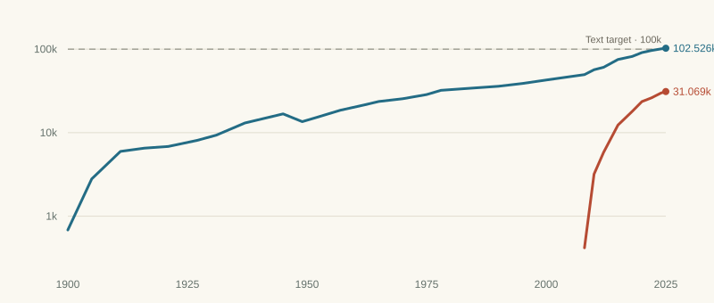
| Year | All lines | High-speed |
|---|---|---|
| 1900 ≈ | 684 | — |
| 1905 ≈ | 2,796 | — |
| 1911 ≈ | 5,965 | — |
| 1916 ≈ | 6,524 | — |
| 1921 ≈ | 6,835 | — |
| 1927 ≈ | 8,078 | — |
| 1931 ≈ | 9,321 | — |
| 1937 ≈ | 1.305e+04 | — |
| 1945 ≈ | 1.678e+04 | — |
| 1949 | 1.355e+04 | — |
| 1952 | 1.522e+04 | — |
| 1957 | 1.858e+04 | — |
| 1962 | 2.15e+04 | — |
| 1965 | 2.361e+04 | — |
| 1970 | 2.548e+04 | — |
| 1975 | 2.858e+04 | — |
| 1978 | 3.212e+04 | — |
| 1985 | 3.43e+04 | — |
| 1990 | 3.592e+04 | — |
| 1995 | 3.877e+04 | — |
| 2000 | 4.269e+04 | — |
| 2005 | 4.685e+04 | — |
| 2008 | 4.952e+04 | 418 |
| 2010 | 5.667e+04 | 3,189 |
| 2012 | 6.065e+04 | 5,814 |
| 2015 | 7.519e+04 | 1.233e+04 |
| 2018 | 8.184e+04 | 1.802e+04 |
| 2020 | 9.091e+04 | 2.355e+04 |
| 2022 | 9.631e+04 | 2.61e+04 |
| 2024 | 1.007e+05 | 2.983e+04 |
| 2025 | 1.025e+05 | 3.107e+04 |
The shape of the railway history matters as much as the final number. Early expansion, wartime damage, post-1949 construction and the later acceleration belong to different episodes. The ledger also distinguishes nominal route mileage from the mileage actually operating in 1949. That distinction warns against reading an inventory as a direct measure of transport service.
Sun specified macadam roads. The inherited Chinese time series counts network length under changing statistical coverage. The American comparator counts surfaced roads. A line drawn at one million miles therefore looks more exact than the underlying comparison permits.
miles · log scale
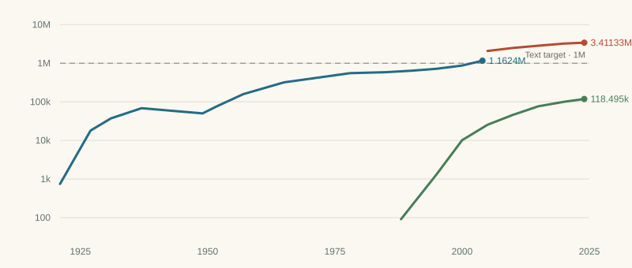
| Year | Highways, pre-2005 count | All roads incl. village, 2005 count | Expressways |
|---|---|---|---|
| 1921 ≈ | 746 | — | — |
| 1927 ≈ | 1.802e+04 | — | — |
| 1931 ≈ | 3.728e+04 | — | — |
| 1937 ≈ | 6.835e+04 | — | — |
| 1949 | 5.014e+04 | — | — |
| 1952 | 7.873e+04 | — | — |
| 1957 | 1.582e+05 | — | — |
| 1965 | 3.197e+05 | — | — |
| 1978 | 5.531e+05 | — | — |
| 1985 | 5.856e+05 | — | — |
| 1988 | — | — | 91 |
| 1990 | 6.39e+05 | — | — |
| 1995 | 7.189e+05 | — | 1,330 |
| 2000 | 8.716e+05 | — | 1.013e+04 |
| 2004 | 1.162e+06 | — | — |
| 2005 | — | 2.079e+06 | 2.548e+04 |
| 2010 | — | 2.491e+06 | 4.604e+04 |
| 2015 | — | 2.844e+06 | 7.674e+04 |
| 2020 | — | 3.23e+06 | 1e+05 |
| 2024 | — | 3.411e+06 | 1.185e+05 |
The inherited series reaches one million miles in 2002 by log interpolation. Yet the official second national road census gives 1,679,800 kilometers at the end of 2000, already more than one million miles. The inherited point for that year is 1,402,700 kilometers. These totals require reconciliation, rather than choosing whichever produces a more satisfying anniversary.2
A later change adds another break. A survey undertaken in 2006 revised the 2005 coverage to include village roads and adjusted some existing categories. The ledger displays the two series separately. For the composite, it attaches the later growth rate to the earlier level, producing a constructed continuity. That splice reduces a statistical jump, but cannot certify a constant road definition.
Railways and roads thus teach different lessons. One offers a relatively legible national length target, subject to operating definitions and source checks. The other shows how a historical threshold can be overtaken by a new statistical category. In both cases, the relevant achievement is larger than the crossing of a line, and the crossing deserves less precision than an annual chart can suggest.
Chapter 03
Northern, eastern and southern ports would connect the continental program to ocean commerce.
The port proposals gave Sun's network its outward orientation. He imagined major commercial harbors in northern, central and southern China, each capable of growing toward the scale of New York Harbor. The choice was as much about the movement of goods behind a port as the depth of water in front of it.
The Great Northern Port proposal is the most visually specific. Its map places a new harbor on the cape between the Qinghe and Luanhe. The ledger associates the later development of Jingtang and Caofeidian with this geography. Jingtang's opening in 1992 and Caofeidian's first ore berth in 2005 are the milestones retained in its scorecard. Tianjin supplies a neighboring port history, rather than being identical to the proposed new harbor.
million tonnes a year · log scale
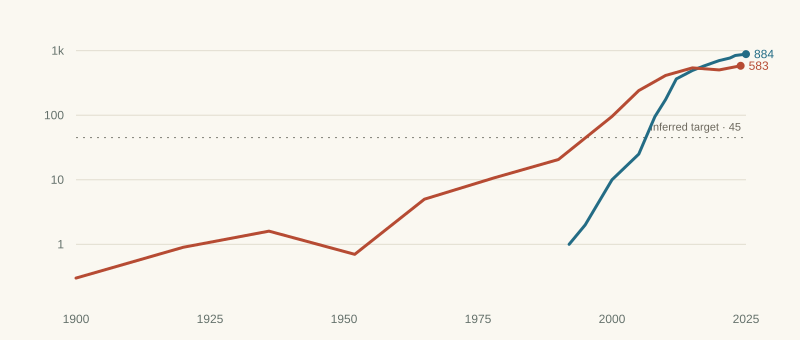
| Year | Tangshan (Jingtang + Caofeidian) | Tianjin |
|---|---|---|
| 1900 ≈ | — | 0.3 |
| 1920 ≈ | — | 0.9 |
| 1936 ≈ | — | 1.6 |
| 1952 | — | 0.7 |
| 1965 | — | 5 |
| 1978 | — | 10.7 |
| 1990 | — | 20.6 |
| 1992 | 1 | — |
| 1995 | 2 | — |
| 2000 | 10 | 95.7 |
| 2005 | 25 | 241 |
| 2008 | 95 | — |
| 2010 | 175 | 413 |
| 2012 | 365 | — |
| 2015 | 493 | 541 |
| 2017 | 573 | — |
| 2019 | 657 | — |
| 2020 | 702 | 503 |
| 2022 | 769 | — |
| 2023 | 842 | — |
| 2024 | 862 | 583 |
| 2025 | 884 | — |
That distinction becomes consequential when the series is standardized. The Chinese Bohai measure adds Tangshan and Tianjin; the American measure follows a changing largest individual port. The resulting numbers are on the same stated unit scale but do not describe matching statistical areas. Original USACE tables also commonly use short tons. The ledger's inherited metric-tonne labels need a documented conversion trail.3
Sun's eastern proposal emphasized a deep-water outlet in Hangzhou Bay. The ledger reads Yangshan's development from 2005 as a striking geographical correspondence. Its eastern chart combines Shanghai and Ningbo-Zhoushan. The southern chart follows Hong Kong, Shenzhen and Guangzhou, while the composite uses Shenzhen and Guangzhou only.
million TEU a year · log scale
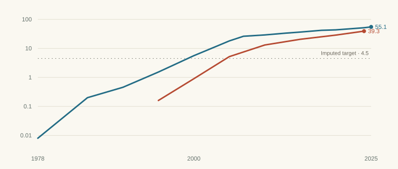
| Year | Shanghai | Ningbo-Zhoushan |
|---|---|---|
| 1978 | 0.008 | — |
| 1985 | 0.2 | — |
| 1990 | 0.456 | — |
| 1995 | 1.53 | 0.16 |
| 2000 | 5.61 | 0.9 |
| 2003 | 11.3 | — |
| 2005 | 18.1 | 5.2 |
| 2007 | 26.2 | — |
| 2010 | 29.1 | 13.1 |
| 2013 | 33.6 | — |
| 2015 | 36.5 | 20.6 |
| 2018 | 42 | — |
| 2020 | 43.5 | 28.7 |
| 2022 | 47.3 | — |
| 2024 | 51.5 | 39.3 |
| 2025 | 55.06 | — |
million TEU a year · log scale
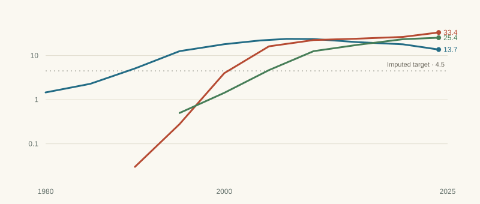
| Year | Hong Kong | Shenzhen | Guangzhou |
|---|---|---|---|
| 1980 | 1.46 | — | — |
| 1985 | 2.29 | — | — |
| 1990 | 5.1 | 0.03 | — |
| 1995 | 12.6 | 0.28 | 0.5 |
| 2000 | 18.1 | 3.99 | 1.43 |
| 2004 | 22 | — | — |
| 2005 | — | 16.2 | 4.68 |
| 2007 | 23.9 | — | — |
| 2010 | 23.7 | 22.5 | 12.6 |
| 2015 | 20.1 | 24.2 | 17.6 |
| 2020 | 18 | 26.5 | 23.5 |
| 2024 | 13.7 | 33.4 | 25.4 |
Containers make these histories easier to compare in one respect and harder in another. A TEU provides a familiar modern unit of handling. It does not provide a literal measure from Sun's world. The ledger's 4.5-million-TEU threshold converts a rough 1921 New York tonnage benchmark using an assumed ten tonnes per TEU. That is an imputation, not a target stated by Sun, and port handling can count the same cargo at more than one location.
Growing ports also require cities. Sun's land-finance argument assumed that development would raise urban land values enough to help repay construction. In the northern proposal he invoked Philadelphia and New York as scales for a future city. The ledger uses later administrative populations as a proxy, which brings another mismatch into view.
millions, municipality at census · log scale
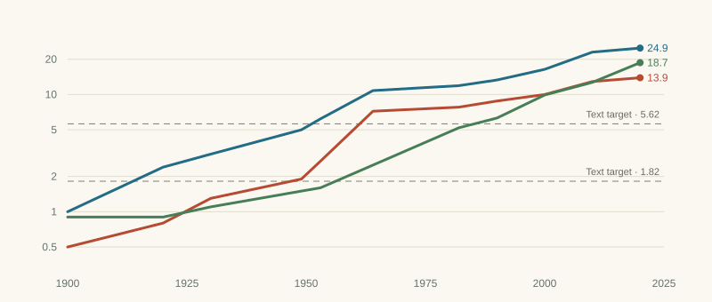
| Year | Shanghai | Tianjin | Guangzhou |
|---|---|---|---|
| 1900 ≈ | 1 | 0.5 | 0.9 |
| 1920 ≈ | 2.4 | 0.8 | 0.9 |
| 1930 ≈ | 3.1 | 1.3 | 1.1 |
| 1949 | 5 | 1.9 | 1.5 |
| 1953 | 6.2 | 2.7 | 1.6 |
| 1964 | 10.8 | 7.2 | 2.5 |
| 1982 | 11.9 | 7.8 | 5.2 |
| 1990 | 13.3 | 8.8 | 6.3 |
| 2000 | 16.4 | 10 | 9.9 |
| 2010 | 23 | 12.9 | 12.7 |
| 2020 | 24.9 | 13.9 | 18.7 |
Tianjin municipality and Los Angeles County are different kinds of territory. Changes to municipal boundaries also raise recorded populations without moving a single person. Neither administrative series is a direct census of the new city imagined at the proposed port. This is why the book keeps the city chart while treating its threshold as suggestive evidence.
The ports are among the strongest visual examples of the plan's later physical resemblance. They are also among the most influential components in the China–US composite. The same chapter therefore supplies a reason to take Sun's geography seriously and a reason to examine the index's basket closely.
Chapter 04
Making a waterway useful required locks, channels, power, steel and cement.
A river can connect an economy and threaten it. Sun's development program approached the Yangtze and Yellow River through several tasks at once: navigation, flood prevention, irrigation and electric power. The industrial works supplying construction belonged to the same program.
On the upper Yangtze, Sun proposed dams and locks that would help vessels pass the rapids while generating power. The ledger connects this project family with Gezhouba and Three Gorges. The latter's 22.5-gigawatt capacity is close to the roughly 22-gigawatt equivalent of the thirty-million-horsepower figure in the later lectures. National hydro capacity crosses the ledger's 22.4-gigawatt threshold in 1983; Three Gorges alone reaches its full stated capacity much later, in 2012. A national total and a named dam answer different questions.
gigawatts · log scale
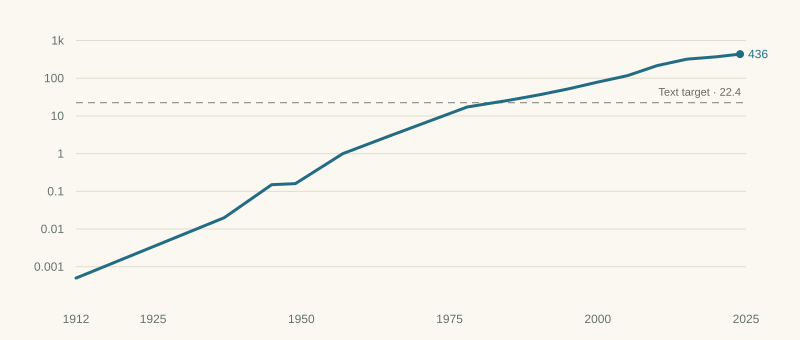
| Year | China |
|---|---|
| 1912 ≈ | 0.0005 |
| 1937 ≈ | 0.02 |
| 1945 ≈ | 0.15 |
| 1949 | 0.16 |
| 1957 | 1 |
| 1965 | 3 |
| 1978 | 17.3 |
| 1985 | 26 |
| 1990 | 36 |
| 1995 | 52 |
| 2000 | 79 |
| 2005 | 117 |
| 2010 | 216 |
| 2015 | 320 |
| 2020 | 370 |
| 2024 | 436 |
The national comparison also requires a consistent capacity definition. Conventional hydropower and pumped storage have different roles. The inherited Chinese and American series need their capacity coverage documented before they can be treated as fully harmonized.4
million tonnes a year · log scale
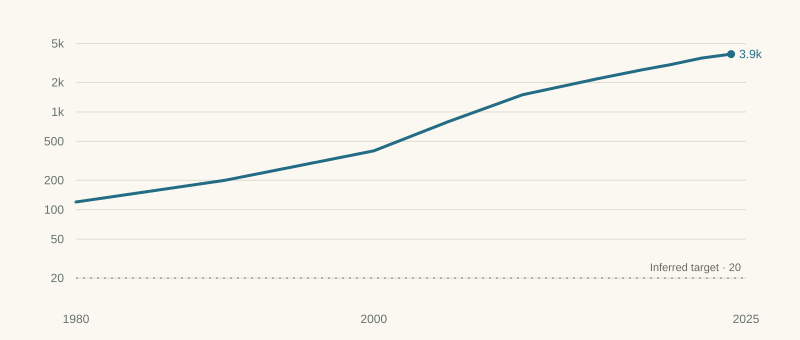
| Year | Main stem, Yibin to the sea |
|---|---|
| 1980 | 120 |
| 1990 | 200 |
| 2000 | 400 |
| 2005 | 795 |
| 2010 | 1,500 |
| 2015 | 2,180 |
| 2018 | 2,690 |
| 2020 | 3,060 |
| 2022 | 3,550 |
| 2024 | 3,900 |
Yangtze freight shows the same need for precision in the noun being counted. Cargo carried, port throughput and passage through a channel or hub are distinct measures. A 2024 release reported expected main-stem port throughput of 4.02 billion tonnes; the inherited chart ends at 3.9 billion tonnes under an incompletely documented concept. Replacing that endpoint alone would not reconcile the historical series.5
For the Yellow River, Sun described engineering works as one half of flood prevention and reforestation of the loess watershed as the other. The ledger's target of halving sediment is an editorial reading, not a numerical promise in the source. Keeping that distinction prevents a figure about the balance of work from becoming a spurious fifty-percent target.
gigatonnes a year, decadal average
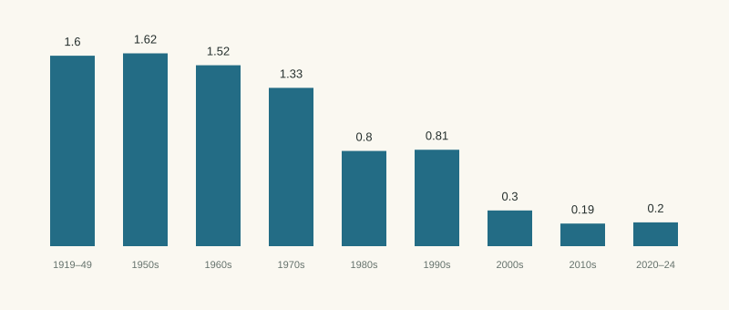
| Period | Gt/year |
|---|---|
| 1919–49 | 1.6 |
| 1950s | 1.62 |
| 1960s | 1.52 |
| 1970s | 1.33 |
| 1980s | 0.8 |
| 1990s | 0.81 |
| 2000s | 0.3 |
| 2010s | 0.19 |
| 2020–24 | 0.2 |
percent of land area, national inventories · log scale
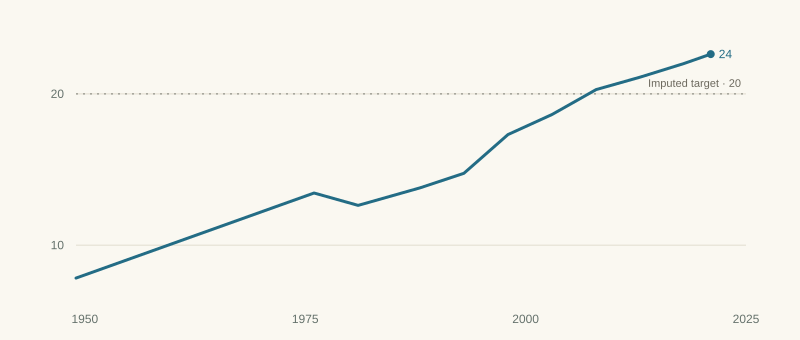
| Year | China |
|---|---|
| 1949 | 8.6 |
| 1976 | 12.7 |
| 1981 | 12 |
| 1988 | 13 |
| 1993 | 13.9 |
| 1998 | 16.6 |
| 2003 | 18.2 |
| 2008 | 20.4 |
| 2013 | 21.6 |
| 2018 | 23 |
| 2021 | 24 |
The sediment chart records a marked decline in the inherited Tongguan series. The forest chart records a rise in national inventory cover. Neither alone measures flood safety, ecosystem health or the full consequences of impoundment. For the composite, lower sediment is treated as better. That convention expresses one aim of the program and leaves other outcomes outside the score.
Steel and cement were the means of building the rest. Sun's figures here were capital sums, so the ledger translates them into approximate annual capacities using assumptions about exchange rates and plant costs around 1920. It uses 7.1 million tonnes for steel and 4.9 million for cement, within the inferred ranges of 5–10 and 3–8 million tonnes.
million tonnes a year · log scale
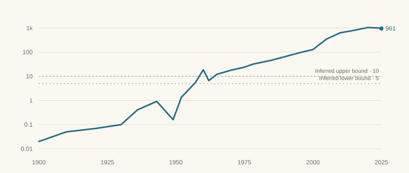
| Year | China |
|---|---|
| 1900 ≈ | 0.02 |
| 1910 ≈ | 0.05 |
| 1921 ≈ | 0.07 |
| 1930 ≈ | 0.1 |
| 1936 ≈ | 0.41 |
| 1943 ≈ | 0.92 |
| 1949 | 0.16 |
| 1952 | 1.35 |
| 1957 | 5.35 |
| 1958 | 8 |
| 1960 | 18.66 |
| 1962 | 6.67 |
| 1965 | 12.2 |
| 1970 | 17.8 |
| 1975 | 23.9 |
| 1978 | 31.8 |
| 1985 | 46.8 |
| 1990 | 66.4 |
| 1996 | 101.2 |
| 2000 | 128.5 |
| 2005 | 353 |
| 2010 | 639 |
| 2015 | 804 |
| 2020 | 1,053 |
| 2024 | 1,005 |
| 2025 | 961 |
million tonnes a year · log scale
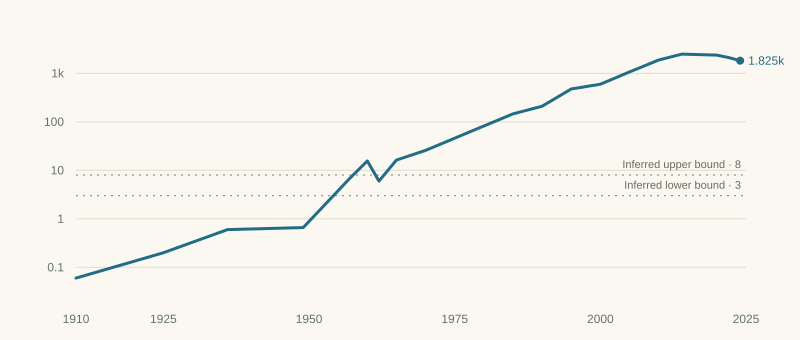
| Year | China |
|---|---|
| 1910 ≈ | 0.06 |
| 1925 ≈ | 0.2 |
| 1936 ≈ | 0.6 |
| 1949 | 0.66 |
| 1957 | 6.86 |
| 1960 | 15.6 |
| 1962 | 6 |
| 1965 | 16.3 |
| 1970 | 25.8 |
| 1978 | 65.2 |
| 1985 | 146 |
| 1990 | 210 |
| 1995 | 476 |
| 2000 | 597 |
| 2005 | 1,069 |
| 2010 | 1,882 |
| 2014 | 2,492 |
| 2020 | 2,377 |
| 2022 | 2,118 |
| 2024 | 1,825 |
The Chinese series exceeds those orders of magnitude in the middle decades of the twentieth century and later reaches a vastly larger scale. The steel record's early wartime and Great Leap peaks demand care about location and product quality. The cement record eventually peaks and declines. Output is a useful measure of industrial scale, but its welfare meaning changes when construction needs and spare capacity change.
Read together, the river and industrial charts show why a simple list of completed objects is insufficient. A lock, a dam, a channel, a safer floodplain and a tonne of cement are linked achievements, yet they cannot substitute for one another in an account of what the program accomplished.
Chapter 05
The physical program was meant to move people and enlarge economic life.
Sun's ten-million-person proposal is one of the plan's most demanding commitments. It joins a number to a time span: movement from congested provinces into the Northwestern territory within ten years. His discussion also imagined organizing settlement through people released from military service. The ledger later associates that institutional mechanism with the Bingtuan, formed in 1954.
The resemblance is worth examining without collapsing the original territory, the later institution and a modern census category into one thing. The ledger follows the Han population of Xinjiang. A population stock reflects migration, births, deaths and changes in classification. It cannot isolate the number of settlers transported by a particular program.
millions, census years · log scale
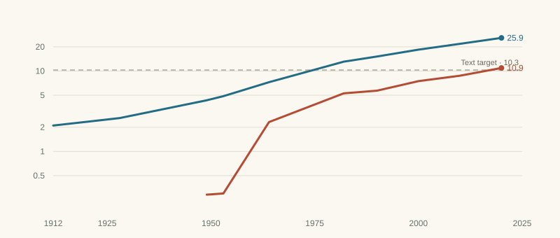
| Year | Total | Han |
|---|---|---|
| 1912 ≈ | 2.1 | — |
| 1928 ≈ | 2.6 | — |
| 1949 | 4.33 | 0.29 |
| 1953 | 4.87 | 0.3 |
| 1964 | 7.27 | 2.32 |
| 1982 | 13.08 | 5.28 |
| 1990 | 15.16 | 5.7 |
| 2000 | 18.46 | 7.49 |
| 2010 | 21.81 | 8.75 |
| 2020 | 25.85 | 10.92 |
The embedded series rises from 0.29 million in 1949 to 10.92 million in 2020. It crosses the assigned 10.3-million threshold in 2018 by interpolation. That provides a long-run population comparison. It does not demonstrate the achievement of ten million migrants in ten years, and the scorecard keeps the settlement target partial.
millions, Liaoning + Jilin + Heilongjiang · log scale
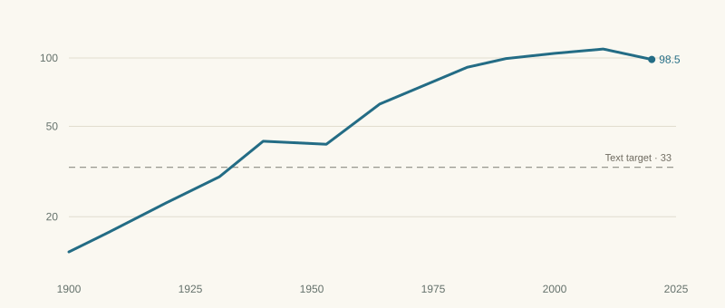
| Year | Northeast |
|---|---|
| 1900 ≈ | 14 |
| 1908 ≈ | 17 |
| 1920 ≈ | 23 |
| 1931 ≈ | 30 |
| 1940 ≈ | 43 |
| 1953 | 41.7 |
| 1964 | 62.7 |
| 1982 | 91 |
| 1990 | 99.4 |
| 2000 | 104.8 |
| 2010 | 109.5 |
| 2020 | 98.5 |
The Northeast supplies another large population history. The ledger adapts the same ten-million Northwestern proposal to the Northeast's 1920 population, producing a target of 33 million. This deliberately asks how another frontier region grew, but it also gives one historical proposal weight in two measures. The American run adapts those population increments to broad western regions with different boundaries and settlement histories.
Xinjiang cotton output makes the agricultural side of the program visible. The series follows a regional crop, while its US comparator covers a whole country. Its one-million-tonne target is imputed from an estimate of China's entire crop around Sun's time. These choices give the measure a historical reference but weaken any claim that it is a direct, symmetrical target comparison.
million tonnes a year · log scale
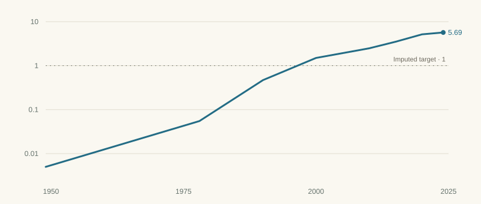
| Year | Xinjiang |
|---|---|
| 1949 | 0.005 |
| 1978 | 0.055 |
| 1990 | 0.47 |
| 2000 | 1.5 |
| 2010 | 2.48 |
| 2015 | 3.5 |
| 2020 | 5.16 |
| 2024 | 5.69 |
The growth of a crop is also only one entry in an account of irrigation. Water use, downstream conditions and the experience of the people doing the work belong to a fuller history. The physical ledger records production and institutions; it does not supply a comprehensive account of social or environmental costs.
1990 international dollars (Maddison) · log scale
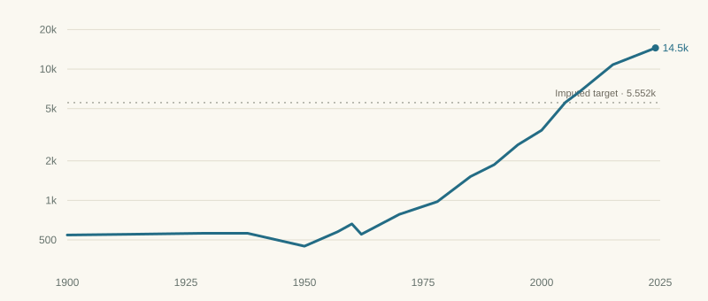
| Year | China |
|---|---|
| 1900 ≈ | 545 |
| 1913 ≈ | 552 |
| 1929 ≈ | 562 |
| 1938 ≈ | 562 |
| 1950 | 448 |
| 1957 | 577 |
| 1960 | 662 |
| 1962 | 552 |
| 1970 | 783 |
| 1978 | 978 |
| 1985 | 1,519 |
| 1990 | 1,871 |
| 1995 | 2,653 |
| 2000 | 3,421 |
| 2005 | 5,575 |
| 2008 | 6,725 |
| 2015 | 1.08e+04 |
| 2024 | 1.45e+04 |
Income per person is the broadest outcome measure in the basket. Sun did not give the numerical income target used here. The ledger interprets his vision of a transformed economy through a benchmark of US income per head in 1920, stated as 5,552 in Maddison's 1990 international dollars. The Chinese series crosses it in 2005. Post-2008 points extend the older series using growth assumptions and require a documented common methodology.
Income and infrastructure are closely related questions with different units of judgment. A larger port can support growth without distributing its gains evenly. A larger regional population can accompany prosperity, coercion, environmental pressure or several of these together. The book therefore treats “built” as a physical verdict whose human interpretation remains open to further evidence.
Chapter 06
Continuity in geography, discontinuity in governments, and a different way of paying.
Once a proposal is placed beside a later project, the next question is political: who gets the credit? The answer depends on whether credit means imagining a route, surveying it, financing it, beginning work, completing it or enlarging it to its current scale.
The ledger separates increases in selected measures into three broad periods: before 1949, 1949–76 and after 1976. This is a descriptive allocation of recorded growth to dates. It is not a counterfactual estimate of what each government caused. Earlier surveys can assist later builders, earlier construction can be damaged, and an inherited institution can matter long after its founding.
Share of the inherited latest-level snapshot
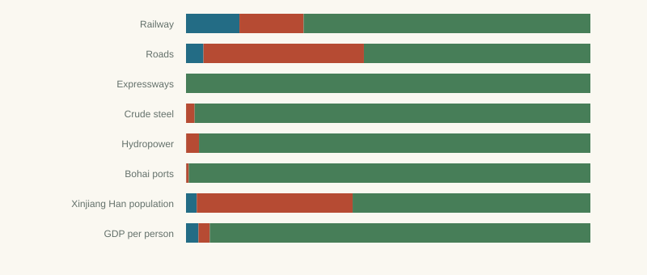
The distinction between foundations and final scale is especially important. The post-1949 decades developed routes, power works and institutions that became part of the later system. The much larger expansion in industrial output, port handling and income appears mainly in the later part of the record. The same Mao-era steel level can look small beside today's production and substantial beside a target inferred from 1920 plant costs.
War and political upheaval complicate every era boundary. The inherited railway record's nominal totals overstate what was actually operating around 1949. The steel record changes sharply across the 1940s. These observations establish disruption in the record, while exact claims about how many years of development were “lost” require a counterfactual this ledger does not estimate.
Mao's 1956 commemoration of Sun praises his revolutionary contributions and political legacy; it does not set out the Industrial Plan's engineering program. Xi Jinping's 2016 anniversary speech explicitly recalls the development blueprint and places later construction in the story of its realization. The two texts show how the emphasis of commemoration changes.6
Neither speech resolves the causal history of each project. The most defensible continuity in this book is the recurrence of geographical and institutional problems: reaching the interior, handling ocean trade, crossing rivers and supplying construction. A complete history of influence would trace personnel, surveys, ministries, financing and design decisions project by project.
Sun's proposed international development organization was central to the scheme. The ledger keeps that financing mechanism as an unfulfilled target even while judging many physical aims built. The later projects were undertaken through changing combinations of state organization, domestic resources and external assistance and investment, rather than through the consortium structure the book proposed.
This is a substantive divergence. It means that “the plan was realized” combines several claims whose truth can differ. The physical scale may arrive; the deadline may be missed; the location may be approximate; the financial bargain may never occur. A useful ledger can keep all four facts in view.
Chapter 07
A composite can organize the evidence. Its meaning depends on the question and the basket.
Sixteen histories are difficult to hold in mind at once. The composite turns each into a standardized path and averages them. It is an aid to comparison, whose simplicity comes from explicit choices about transformations, dates, targets and weights.
The calculation first interpolates positive values onto annual years in logarithmic space. It then standardizes the logs, reverses the sediment measure so that lower values score higher, and caps each z-score between −3 and +3. Every measure remains in the average from 1875 through 2025. Before recorded coverage the existing convention assigns a −3 floor; after the last observed year it carries the last score forward.
Interpolated years within a series' observation span contribute to its mean and standard deviation. The floor and carried-forward years do not. This matters because a sparse early estimate can influence a long interval. In a port aggregate, all components must remain covered: the sum stops at their last common endpoint and is then carried forward as a whole.
Composite z · 1875–2025 · sixteen measures
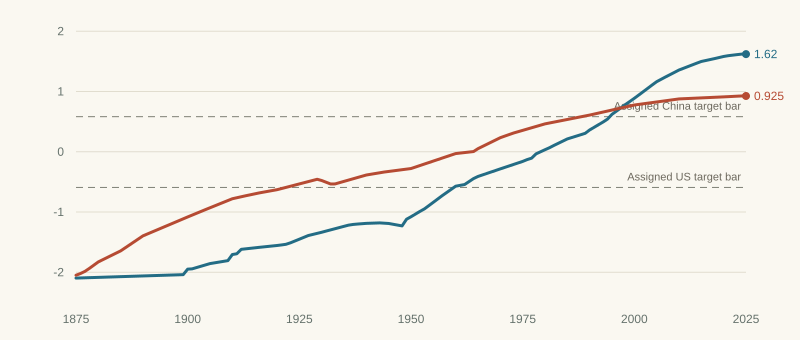
In the own-distribution version, China is scored against its Chinese history and the United States against its American history. China's composite reaches its average assigned Sun target in 1995 and ends at about +1.62. The American composite crosses its own target bar in 1922 and ends near +0.93.
Those endpoints reflect historical shape. A series that grew rapidly late in the window ends far above its own average. A series that peaked much earlier can finish near or below its historical mean. Consequently, one country scoring higher on this relative scale does not establish that its infrastructure or income level is larger.
Composite z · 1875–2025 · sixteen measures
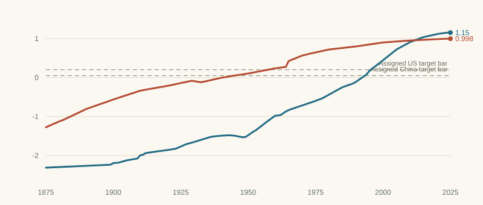
The pooled version instead uses a shared mean and standard deviation for each Chinese–American pair. In the full inherited basket, China's composite first reaches the American one after 1950 in 2012. The 2025 scores are about 1.15 and 1.00. Pooling makes the numerical scale common. It leaves port boundaries, road surfaces, population definitions and freight counting to be resolved separately.
| Scenario | Measures | China / Sun, own | China / US, pooled* | 2025 gap |
|---|---|---|---|---|
| All sixteen (baseline) | 16 | 1995 | 2012 | +0.155 |
| Without imputed targets | 10 | 1977 | 2009 | +0.203 |
| Text-tagged targets only (includes 1924 hydro) | 6 | 1991 | Not reached | -0.293 |
| Without the three port measures | 13 | 1991 | Not reached | -0.003 |
| Rail, steel, cement and hydro only | 4 | 1979 | 2002 | +0.525 |
| Without Chinese PRE backfill estimates | 16 | 1993 | 2012 | +0.168 |
| Steel/cement targets at lower bounds | 16 | 1995 | 2012 | +0.155 |
| Steel/cement targets at upper bounds | 16 | 1995 | 2012 | +0.155 |
Removing the six imputed targets also removes those measures from both the line and the bar. China's own target crossing moves from 1995 to 1977. The pooled China–US first-at-or-above year moves to 2009. Keeping only the six text-tagged measures, including the later hydro figure and adapted population targets, yields no pooled crossing through 2025.
A narrower basket of rail, steel, cement and hydro reaches the US in 2002. It emphasizes national physical measures and asks a different question. Removing each of the sixteen measures individually produces dates between 2009 and 2016. That is a useful deletion test, but the joint removal of ports shows why individual deletions cannot establish robustness to every plausible basket.
These spans are scenario results, not confidence intervals. They quantify the consequence of specified choices. They do not quantify all errors in estimated anchors, historical definitions or omitted social outcomes. The index is most useful when its assumptions remain available to the reader.
Chapter 08
Physical resemblance is strong evidence of scale, and a starting point for further history.
The broad impression survives the counting difficulties. The development program asked for a connected network of transport, ports, power and industrial works. The inherited record shows later construction at a scale that reaches or exceeds many of its numerical yardsticks. Some of the most memorable correspondences are geographical: the northern port approaches, Hangzhou Bay, the Yangtze gorges and lines into the interior.
The scorecard classifies twelve of its eighteen entries as built, four as partial and two as unfulfilled. These are editorial judgments using the available record, rather than eighteen tests with identical definitions. The road entry is partial because a broad network total cannot settle the macadam requirement or the conflicting census coverage. Inland ocean shipping, the Grand Canal and the ten-year settlement pace likewise resist a simple completed stamp.
The two unfulfilled entries concern Yellow River navigation to Lanzhou and Sun's international consortium mechanism. Their presence is part of the argument. A favorable record of physical construction should not erase the pieces that did not arrive.
The highest-priority data repair is the road history. A consistent series must reconcile the official 2000 census, the 2005 rebase, surface categories and the American surfaced-road comparator. The port series then need stable geographic boundaries, original tables and a transparent unit-conversion history.
Population measures need an equally deliberate decision. Migration flows answer the settlement proposal more directly than population stocks. Harmonized urban areas would answer a city-size question more directly than municipalities and counties. Replacing those proxies would change both the narrative and the composite, so the book leaves the present definitions visible.
River freight requires an accounting concept that survives through time. Hydro needs a common capacity scope. The income comparison needs a common Maddison vintage and a documented extension. These are specific research tasks, rather than a general reason to abandon the exercise.
The point of retaining a ledger is that revisions can be explained. The v009 calculation corrected port aggregates that had mistaken a missing final observation for zero. It also preserved exact observed values during interpolation, avoiding a one-year target-crossing error caused by floating-point reconstruction. Those changes improved the calculation without supplying missing historical evidence.
The digital-book edition keeps that distinction. It offers a continuous reading of the plan and its material afterlife, while leaving the measurements, judgments and qualifications accessible in the appendices and downloadable data. Its conclusions can be revised at the level where the evidence changes.
Sun's book placed the engineering of a country within the politics of its future. A century later, the built landscape gives his proposals a remarkable afterlife. The useful question is how that landscape came into being, which parts resemble the earlier program, and what a tally of physical scale still leaves to be understood.
Appendix A
Eighteen editorial judgments, including qualifications and proposed horizons.
“Built” records the ledger's physical assessment. It does not imply that the project followed Sun's financing mechanism or met his deadline. Statements about the latest levels and historical events are inherited from the underlying research, with the road correction and comparison limits described in this edition.
100,000 mi reached 2024; 102,500 mi at end-2025, 31,000 mi of it high-speed
Horizon / qualification: 10 yrs for 200,000 li (~62,000 mi), his 1912 pledge as Director of Railways; no horizon in the 1921 text
Embedded series crosses in 2002; the official 2000 road census already exceeds 1 M mi under its coverage. Definitions require reconciliation; macadam specification unverified
Horizon / qualification: network-length proxy; census coverage differs
Jingtang 1992, Caofeidian 2005: together Tangshan Port, 884 Mt in 2025, second in the world by tonnage
Horizon / qualification: a city as large as Philadelphia within 40 years (1961); as large as New York in a reasonable time (p. 16)
Yangshan Deep-Water Port phase 1, 2005; Shanghai the busiest container port on earth since 2010
Horizon / qualification: land values up 10- to 1,000-fold within 10 years; a city equal to New York (pp. 34–35)
Shenzhen passed Hong Kong 2013, Guangzhou 2018; Pearl River estuary is the largest port cluster anywhere
Gezhouba 1988; Three Gorges 2003–12, 22.5 GW, 10,000-t barges to Chongqing
Horizon / qualification: 30 million horsepower, about 22 GW, his figure in the 1924 lectures; Three Gorges is 22.5 GW
12.5 m channel to Nanjing (2018); Wuhan takes river-sea vessels, not liners
Horizon / qualification: $300 M Mex for the whole river; 450 sq mi of estuary reclaimed within 20 years (1941)
No levee breach since 1949; sediment load down about 90% since the 1950s
Never; the lower river ran dry most years 1972–99
Harness-the-Huai 1950–53, on the Jameson alignment Sun endorsed
South half a freight artery; north half re-watered 2022, no shipping
Bingtuan formed 1954 from demobilized soldiers, his mechanism; Xinjiang Han population +10.6 M over 71 years; Manchuria took 10 M migrants in the 1920s instead
Horizon / qualification: 10 years (1931)
At 1920 US capital costs that sum buys 5–10 Mt/yr: reached 1957–65. China passed Japan 1996; ~961 Mt in 2025, about half the world; Hebei alone ~20%
Horizon / qualification: no horizon; capital sum implies 5–10 Mt/yr (inferred)
That sum buys 3–8 Mt/yr at 1920 costs: reached 1957–65. Peak 2.5 Gt in 2014, roughly half of world output
Horizon / qualification: no horizon; capital sum implies 3–8 Mt/yr (inferred)
Wuhan bridge 1957, Nanjing 1968; through trains Beijing–Shanghai
Forest cover 8.6% (1949) to 24% (2021)
1.8 billion mobile subscriptions
Never. Built by the Chinese state: Soviet aid 1953–60, domestic savings, FDI after 1978
Appendix B
The choices behind the lines.
Each baseline composite averages sixteen equally weighted measures across a common 151-year calendar, 1875–2025. Quantities are interpolated log-linearly between positive observations. The standard deviation is the population standard deviation of annual log values within observed coverage. Lower sediment is sign-reversed; individual z-scores and target z-scores are winsorized at ±3.
The −3 floor represents both true nonexistence and some unknown early coverage. Those are different historical conditions. The existing rule is preserved to keep a constant basket, and its influence is explored in the early-backfill scenario. After the final observed year, the last score is carried to 2025. These support years are excluded from the standardization statistics.
Own-distribution scores use separate country histories. Pooled scores use the union of both countries' annual log observations for each pair. The assigned target is standardized using the same distribution as its series. Relative population proxies and imputed river-halving targets use separate country baselines, which is why pooled target bars can differ.
“Crossed” below means the first annual value meeting the assigned threshold, including interpolated years. Where the first available observation already meets it, the date is a bound on the available record. It is not proof that the threshold was first reached in that year.
| Measure | China target | US target | Provenance | China meets | US meets |
|---|---|---|---|---|---|
| Railway, mi | 100k | 100k | text | 2024 | 1882 |
| Roads, mi | 1M | 1M | text | 2002 | 1936 |
| Bohai ports, Mt | 45 | 45 | inferred | 1995 | 1921 |
| Yangtze delta, M TEU | 4.5 | 4.5 | imputed | 1999 | 1993 |
| Pearl River (SZ+GZ), M TEU | 4.5 | 4.5 | imputed | 2000 | 2008 |
| Crude steel, Mt | 7.1 | 7.1 | inferred | 1958 | 1896 |
| Cement, Mt | 4.9 | 4.9 | inferred | 1956 | 1906 |
| Yangtze freight, Mt | 20 | 20 | inferred | 1957 | 1875 |
| Hydropower, GW | 22.4 | 22.4 | text | 1983 | 1954 |
| Yellow River silt, Gt (lower is better) | 0.8 | 0.2 | imputed | 1985 | 1980 |
| Forest cover, % | 20 | 20 | imputed | 2008 | 1870 |
| Xinjiang Han, M | 10.3 | 19.2 | text | 2018 | 1949 |
| Xinjiang cotton, Mt | 1 | 1 | imputed | 1997 | 1872 |
| Northeast population, M | 33 | 43.3 | text | 1934 | 1943 |
| Tianjin population, M | 5.62 | 5.62 | text | 1962 | 1959 |
| GDP per person, 1990 $ | 5.552k | 5.552k | imputed | 2005 | 1920 |
The full data download contains raw chart anchors, composite inputs, yearly composites, per-series results and the sensitivity outputs. The original interactive ledger preserves its scale and comparison controls.
Appendix C
Primary texts, definition checks and the remaining source trail.
Chinese rail, road, steel, cement and hydro anchors are attributed to National Bureau of Statistics yearbooks and transport, railway and energy releases. Port anchors are attributed to the relevant port authorities; sediment to Yellow River Conservancy Commission records; forest cover to national inventories; population to census returns and earlier estimates; income to Maddison's 1990 international-dollar series with later growth extensions.
American anchors are attributed to ICC, AAR and BTS for rail; FHWA for surfaced roads; USGS for steel and cement; EIA and FPC for hydro; USACE and USGS for freight and sediment; port authorities for container traffic; the Census Bureau for population; and Maddison for income. These are source families. A complete point-by-point citation trail remains a research task.
Earlier Chinese and American observations contain estimates, sometimes with wide uncertainty. The charts mark Chinese observations before 1949 with ≈ in their underlying tables. The composite also uses estimated backfills beginning in 1875 for selected measures. Contemporary-looking annual paths between anchors are interpolations.
This is the first digital-book edition, v010, prepared from the v009 ledger on 29 October 2026. The book reorganizes the research into chapters and retains the validated numerical baseline. Its source audit verifies selected definitions and numerical reproducibility; the inherited historical narrative and every individual data point have not all been independently reverified. No assertion of broad national superiority follows solely from the selected composite.
Original historical quotations and maps are credited to Sun's public-domain text. The editorial narration, figures and reader interface form this digital edition.